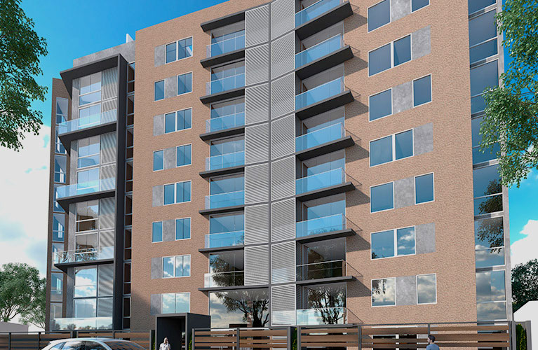

Constructora K&Z eirl es una empresa de reconocido prestigio y liderazgo en Perú, creada en 2015 y cuyos socios fundadores permanecen en la gestión hasta el día de hoy. Con una vasta experiencia en el sector público y privado, Inarco se ha destacado especialmente en la construcción comercial, Edificación, centros de distribución, industrial, obras civiles, minería y agroindustrial.
Proyectar y mantener una presencia en el sector de la construcción e inmobiliaria, manteniendo un crecimiento continuo en el tiempo para alcanzar liderazgo y prestigio en el mercado.
Proyectar y mantener una presencia en el sector de la construcción e inmobiliaria, manteniendo un crecimiento continuo en el tiempo para alcanzar liderazgo y prestigio en el mercado.
Fundador desde el año 2022, dio comienzo a esta empresaen función a las necesidades de las personas por conseguir viviendas adecuadas a las necesidades del siglo XXI.